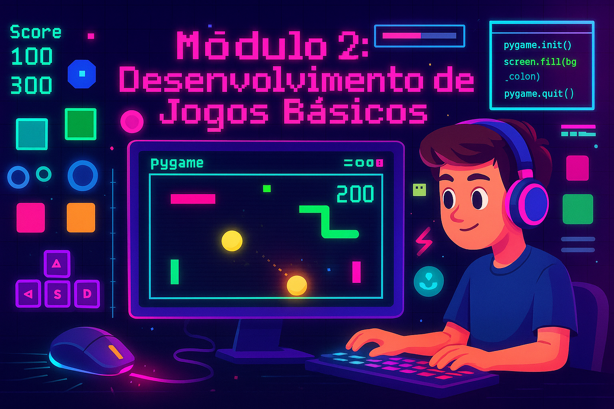

Entre no mundo dos jogos 2D com Pygame e crie seu primeiro jogo completo
Agora que você domina os fundamentos da programação, é hora de criar algo visual e interativo! Neste módulo, você vai aprender a desenvolver jogos 2D usando a biblioteca Pygame, uma das ferramentas mais populares para criação de jogos em Python.
Pygame é uma biblioteca Python criada para facilitar o desenvolvimento de jogos. Ela fornece funções para desenhar gráficos, tocar sons, detectar colisões e muito mais. É perfeita para iniciantes aprenderem desenvolvimento de jogos!
Abra o terminal ou prompt de comando e digite:
pip install pygamePara verificar se instalou corretamente:
python -c "import pygame; print(pygame.ver)"Vamos criar uma janela vazia que fica aberta até você clicar no X. É como abrir um caderno em branco onde vamos desenhar nosso jogo.
import pygame
# Inicializar o Pygame
pygame.init()
# Criar janela (largura x altura)
largura = 800
altura = 600
tela = pygame.display.set_mode((largura, altura))
pygame.display.set_caption("Meu Primeiro Jogo")
# Cores (RGB - Red, Green, Blue)
PRETO = (0, 0, 0)
BRANCO = (255, 255, 255)
# Loop principal do jogo
rodando = True
while rodando:
# Verificar eventos
for evento in pygame.event.get():
if evento.type == pygame.QUIT:
rodando = False
# Pintar fundo de preto
tela.fill(PRETO)
# Atualizar tela
pygame.display.flip()
# Encerrar Pygame
pygame.quit()O Pygame utiliza SDL (Simple DirectMedia Layer) como backend para renderização. O game loop segue o padrão clássico: processar eventos, atualizar estado, renderizar frame. A função display.flip() realiza double buffering para evitar flickering.
import pygame
import sys
# Inicialização e configuração
pygame.init()
clock = pygame.time.Clock()
FPS = 60
# Display
SCREEN_WIDTH, SCREEN_HEIGHT = 800, 600
screen = pygame.display.set_mode((SCREEN_WIDTH, SCREEN_HEIGHT))
pygame.display.set_caption("Game Template")
# Game loop otimizado
running = True
while running:
# Event handling
for event in pygame.event.get():
if event.type == pygame.QUIT:
running = False
elif event.type == pygame.KEYDOWN:
if event.key == pygame.K_ESCAPE:
running = False
# Update logic
# (adicione lógica do jogo aqui)
# Render
screen.fill((0, 0, 0))
# (adicione renderização aqui)
pygame.display.flip()
# Manter 60 FPS
clock.tick(FPS)
pygame.quit()
sys.exit()Em Pygame, a origem (0, 0) fica no canto superior esquerdo da tela:
import pygame
pygame.init()
tela = pygame.display.set_mode((800, 600))
# Cores
VERMELHO = (255, 0, 0)
VERDE = (0, 255, 0)
AZUL = (0, 0, 255)
AMARELO = (255, 255, 0)
rodando = True
while rodando:
for evento in pygame.event.get():
if evento.type == pygame.QUIT:
rodando = False
tela.fill((0, 0, 0))
# Retângulo: pygame.draw.rect(tela, cor, (x, y, largura, altura))
pygame.draw.rect(tela, VERMELHO, (50, 50, 100, 80))
# Círculo: pygame.draw.circle(tela, cor, (x_centro, y_centro), raio)
pygame.draw.circle(tela, VERDE, (400, 300), 50)
# Linha: pygame.draw.line(tela, cor, (x1, y1), (x2, y2), espessura)
pygame.draw.line(tela, AZUL, (600, 100), (700, 200), 5)
# Polígono (triângulo)
pontos = [(300, 100), (250, 200), (350, 200)]
pygame.draw.polygon(tela, AMARELO, pontos)
pygame.display.flip()
pygame.quit()Vamos fazer um quadrado que se move com as setas do teclado:
import pygame
pygame.init()
tela = pygame.display.set_mode((800, 600))
clock = pygame.time.Clock()
# Posição do jogador
jogador_x = 400
jogador_y = 300
velocidade = 5
rodando = True
while rodando:
for evento in pygame.event.get():
if evento.type == pygame.QUIT:
rodando = False
# Capturar teclas pressionadas
teclas = pygame.key.get_pressed()
if teclas[pygame.K_LEFT] or teclas[pygame.K_a]:
jogador_x -= velocidade
if teclas[pygame.K_RIGHT] or teclas[pygame.K_d]:
jogador_x += velocidade
if teclas[pygame.K_UP] or teclas[pygame.K_w]:
jogador_y -= velocidade
if teclas[pygame.K_DOWN] or teclas[pygame.K_s]:
jogador_y += velocidade
# Limitar à tela
jogador_x = max(0, min(jogador_x, 750))
jogador_y = max(0, min(jogador_y, 550))
tela.fill((0, 0, 0))
pygame.draw.rect(tela, (0, 255, 0), (jogador_x, jogador_y, 50, 50))
pygame.display.flip()
clock.tick(60)
pygame.quit()Colisões são essenciais em jogos. Vamos usar retângulos (Rect) do Pygame:
import pygame
pygame.init()
tela = pygame.display.set_mode((800, 600))
clock = pygame.time.Clock()
# Objetos como retângulos
jogador = pygame.Rect(100, 250, 50, 50)
obstáculo = pygame.Rect(400, 250, 50, 50)
moeda = pygame.Rect(600, 250, 30, 30)
pontos = 0
velocidade = 5
rodando = True
while rodando:
for evento in pygame.event.get():
if evento.type == pygame.QUIT:
rodando = False
teclas = pygame.key.get_pressed()
if teclas[pygame.K_LEFT]:
jogador.x -= velocidade
if teclas[pygame.K_RIGHT]:
jogador.x += velocidade
if teclas[pygame.K_UP]:
jogador.y -= velocidade
if teclas[pygame.K_DOWN]:
jogador.y += velocidade
# Detectar colisão com obstáculo
if jogador.colliderect(obstáculo):
print("Colidiu com obstáculo!")
jogador.x = 100
jogador.y = 250
# Detectar colisão com moeda
if jogador.colliderect(moeda):
pontos += 10
moeda.x = 600 # Reposicionar moeda
print(f"Pontos: {pontos}")
tela.fill((0, 0, 0))
pygame.draw.rect(tela, (0, 255, 0), jogador) # Verde - Jogador
pygame.draw.rect(tela, (255, 0, 0), obstáculo) # Vermelho - Obstáculo
pygame.draw.rect(tela, (255, 255, 0), moeda) # Amarelo - Moeda
pygame.display.flip()
clock.tick(60)
pygame.quit()Vamos criar o clássico jogo Pong!
import pygame
import random
pygame.init()
# Constantes
LARGURA = 800
ALTURA = 600
BRANCO = (255, 255, 255)
PRETO = (0, 0, 0)
tela = pygame.display.set_mode((LARGURA, ALTURA))
pygame.display.set_caption("PONG")
clock = pygame.time.Clock()
fonte = pygame.font.Font(None, 74)
fonte_pequena = pygame.font.Font(None, 36)
# Raquetes
raquete1 = pygame.Rect(50, ALTURA // 2 - 60, 15, 120)
raquete2 = pygame.Rect(LARGURA - 65, ALTURA // 2 - 60, 15, 120)
# Bola
bola = pygame.Rect(LARGURA // 2 - 15, ALTURA // 2 - 15, 20, 20)
bola_dx = 5 * random.choice([1, -1])
bola_dy = 5 * random.choice([1, -1])
# Placar
pontos1 = 0
pontos2 = 0
def resetar_bola():
global bola_dx, bola_dy
bola.center = (LARGURA // 2, ALTURA // 2)
bola_dx = 5 * random.choice([1, -1])
bola_dy = 5 * random.choice([1, -1])
rodando = True
while rodando:
for evento in pygame.event.get():
if evento.type == pygame.QUIT:
rodando = False
# Controles
teclas = pygame.key.get_pressed()
if teclas[pygame.K_w] and raquete1.top > 0:
raquete1.y -= 7
if teclas[pygame.K_s] and raquete1.bottom < ALTURA:
raquete1.y += 7
if teclas[pygame.K_UP] and raquete2.top > 0:
raquete2.y -= 7
if teclas[pygame.K_DOWN] and raquete2.bottom < ALTURA:
raquete2.y += 7
# Movimento da bola
bola.x += bola_dx
bola.y += bola_dy
# Colisão com topo e base
if bola.top <= 0 or bola.bottom >= ALTURA:
bola_dy *= -1
# Colisão com raquetes
if bola.colliderect(raquete1) or bola.colliderect(raquete2):
bola_dx *= -1
# Pontuação
if bola.left <= 0:
pontos2 += 1
resetar_bola()
if bola.right >= LARGURA:
pontos1 += 1
resetar_bola()
# Desenhar
tela.fill(PRETO)
pygame.draw.rect(tela, BRANCO, raquete1)
pygame.draw.rect(tela, BRANCO, raquete2)
pygame.draw.ellipse(tela, BRANCO, bola)
pygame.draw.aaline(tela, BRANCO, (LARGURA // 2, 0), (LARGURA // 2, ALTURA))
# Placar
texto1 = fonte.render(str(pontos1), True, BRANCO)
texto2 = fonte.render(str(pontos2), True, BRANCO)
tela.blit(texto1, (LARGURA // 4, 50))
tela.blit(texto2, (3 * LARGURA // 4, 50))
pygame.display.flip()
clock.tick(60)
pygame.quit()Agora que você completou o Módulo 2, visite o Observatório do Futuro para revisar todos os conceitos de Pygame e desenvolvimento de jogos através de flash cards interativos!